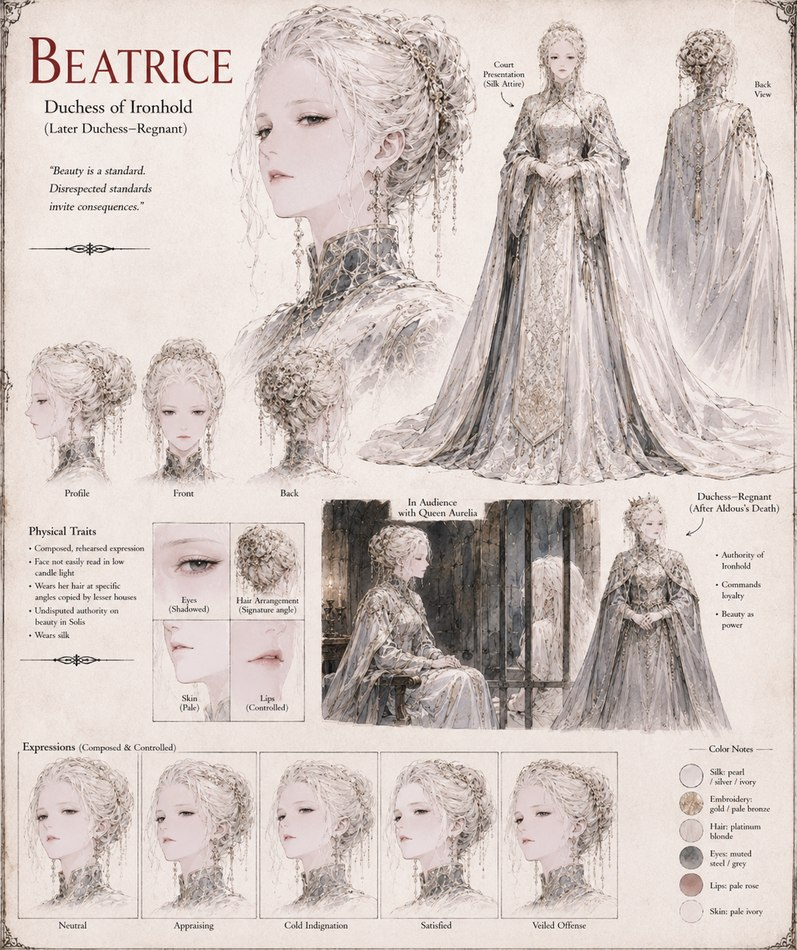

Beatrice
Duchess of Ironhold, later Duchess-Regnant · wife to Aldous
Duchess of Ironhold, composed and exacting, with a bearing lesser houses copy down to the angle of her hair. Publicly humiliated by Queen Aurelia's chrome heels at the Great Concord and then refused an apology for it, she spends the following months as the war's original grievance — and, after Aldous's death in the Great Hall, becomes Duchess-Regnant in earnest, carrying both the title and the blame for how it was won.
“Beauty is a standard. Disrespected standards invite consequences.”